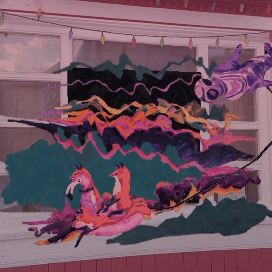

pink/KLYNK is a collaboration with visual artist pinkmilkdrink, an augmented reality filter based on the painting "nuthin personal - it wUz juS biZinES lol"
post-apocalyptic visions bout foxes on floaties on oil on water n nothing personal it wUz juS biZinES
made for (s)hiver arts fest 2024, displayed at the westminster hotel, dawson city, yukon
